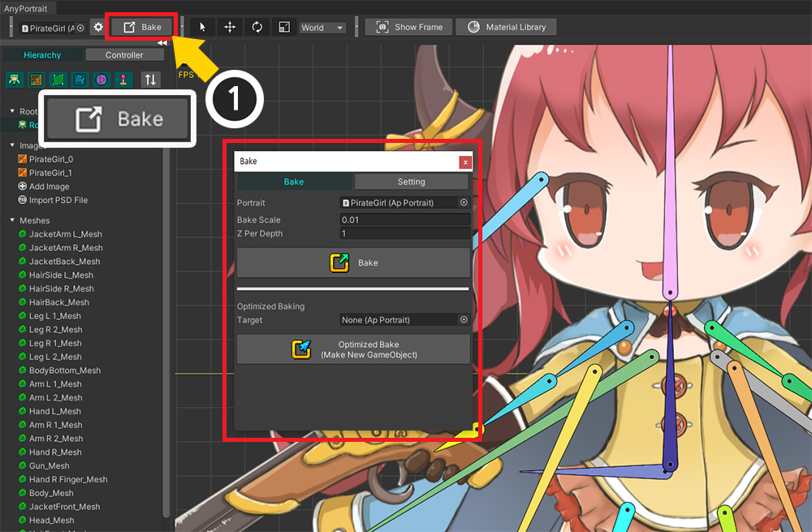
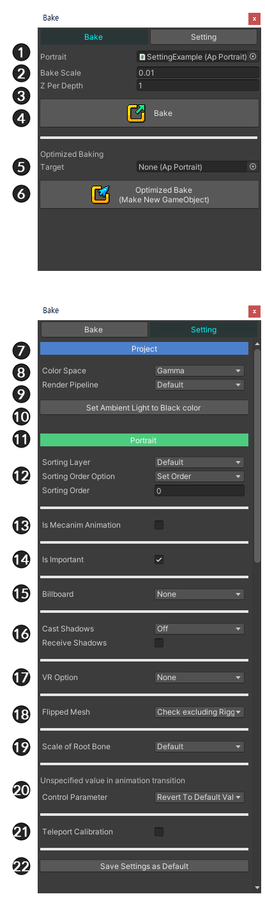
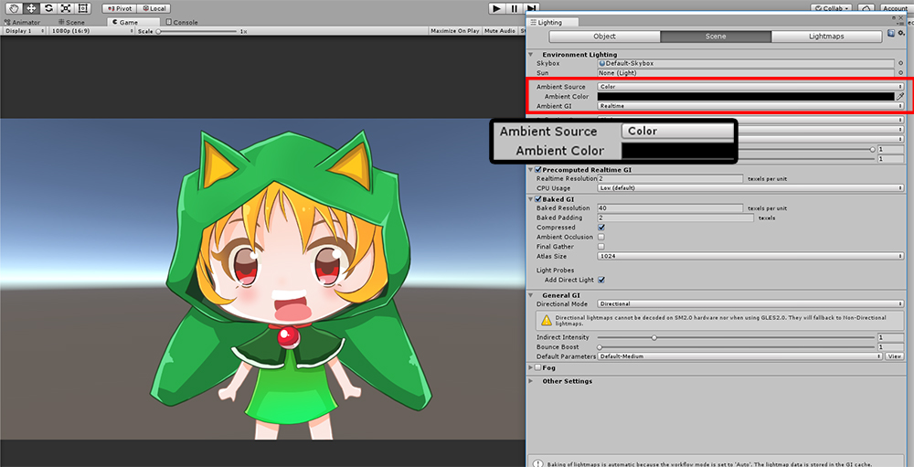

AnyPortrait > マニュアル > Bakeダイアログ
Bakeダイアログ
1.4.2

v1.1.0以降、BakeダイアログのUIが部分的に変更されました。
画面の上部にあるBakeボタンを押すと、Bakeダイアログボックスが表示されます。
ダイアログの上部には、 「Bake」タブと 「Setting」タブがあります。
「Setting」タブには、Bake用のapPortraitの設定が含まれています。
[ Bakeタブ ]
1. Portrait : apPortraitは現在編集中です。
2. Bake Scale : AnyPortraitの座標系はUnityの座標系とは異なるので、これに合うのはサイズの比です。
3. Z Per Depth : 各メッシュのZ間隔。 小さすぎると「Z-Fighting」の問題が発生することがあります。
4. Bake : BakeしてUnityに出す。
5. Optimized Baking Target
6. Optimized Bake : 最適化されたBakeをしてUnityに出す。
[ Settingタブ ]
7. Project カテゴリー
: 以下の設定はプロジェクトごとに変更され、保存されます。
8. Color Space
: Unityの色空間（Gamma / Linear）に合わせてBakeをすることができます。
9. Render Pipeline
: プロジェクトの「Render Pipeline（Default / Scriptable Render Pipeline）」に合わせて設定するためのオプションです。
（Unity 2019からサポートされているオプションです。）
このオプションは、クリッピングメッシュが正常に描画されるよう作成されます。
「Render Pipeline」と「マテリアル」に関する設定は、次のページを参照してください。
（マテリアルライブラリ / Lightweight Render Pipeline）
10. Set Ambient Light to Black color
: Unityシーンの「Ambient色」を黒に作ってキャラクターが過度に明るく表示されることを防止します。
11. Portrait カテゴリー
: 以下の設定は、キャラクター（Portrait）単位で保存されます。
12. Sorting Layer / Order
: メッシュのレンダリング順序を決定するオプションであり、「Sorting Order」を割り当てる方法を決定することができます。 （関連ページ）
13. Mecanim 設定
: 「Mecanim」を使用するかどうかと、「Animator」に含まれる「Animation Clipが生成されるパス」を設定することができます。
14. Important 設定
: 「Important」をオフにすると、指定した「FPS」分だけ更新をします。
ゲームなどで重要でないオブジェクトやNPCの場合、最適化のために「Important」をオフにして更新を制限することができます。基本的にはオンになっています。 （関連ページ）
15. Billboard
: 正面が常にカメラを向くように強制する設定です。
「ビルボード」が有効な場合、「Perspectiveカメラ」を利用することが可能で、キャラクターを3Dシーンに配置することが可能です。 （関連ページ）
16. Shadow 設定
: 「Mesh Renderer」の「Shadow設定」を一括して指定することができます。
（基本的に提供されるShaderでは「Receive Shadows」をつけても影が適用されません。）
17. VR Option
: VRを利用したり、複数のカメラを利用する場合のレンダリングオプションです。
このオプションは、クリッピングメッシュとビルボード計算が実行環境に合わせて作成します。
VRの説明は、次のページを参照してください。
（VRにビルド）
18. Flipped Mesh
: これはメッシュの大きさが逆転されると、正常にレンダリングされるように補正する機能に関するオプションです。
このオプションによってリギングされたメッシュもこの処理に含まれるかどうかを決定します。
(関連ページ)
19. Scale of Root Bone
: 「子メッシュグループ」と「ルートのボーン」の間のサイズ演算に関するオプションです。
(関連ページ)
20. Unspecified value in animation transition
: 切り替えられる次のアニメーションで、指定されていない値が「デフォルト値に回復」するか、「最後の値が維持」されるかを決定するオプションです。
21. Teleport Calibration
: キャラクターが1フレームの間、そのオプションの距離以上に動く場合、物理効果を一時的に減少させるオプションです。
22. Save Settings as Default
: 現在のBake設定を「デフォルト」として保存して、他のキャラクター（Portrait）にもすばやく適用できるようにします。

Ambient Light設定をAnyPortraitに合わせて変更
1.1.2
AnyPortraitでキャラクターを作成し、「Bake」をすると、文字が過度に明るく表示される経験を一度経験し見たことです。
これAnyPortraitのキャラクターがシーンの「Ambient Light」の適用を受けるためです。
正しく適用するためには、「Ambient Light」を黒に変えなければならが、Bakeダイアログでこの作業を迅速に行うことができます。

Bake直後にUnityシーンでのレンダリング画面です。
元の色と異なって、過度に明るくレンダリングがされていることを見ることができます。

Bakeダイアログの「Setting」タブで「Set Ambient Light to Black Color」ボタンをクリックします。

Ambient設定が変わり、通常の明るさでレンダリングがされていることを見ることができます。
「Render Pipeline」オプションの自動変更
1.3.5
プロジェクトのレンダリングパイプラインをデフォルト以外の「URP」などに設定した場合は、「Bake」設定の「Render Pipeline」オプションを「Scriptable Render Pipeline」に上記のように変更する必要があります。
特にクリッピングメッシュを正常に動作させるには、必須に設定する必要があります。
AnyPortrait v1.3.5では、プロジェクトのレンダリングパイプラインと「Bake」設定が合っていない場合、それを確認して自動的に変更する機能が追加されました。

「Bake」を実行するときに「URP」を使用する場合、またはその逆の状況で「Render Pipeline」オプションが適切でない場合は、上記のメッセージが表示されます。
「Change Now」ボタンを押してみましょう。
現在のプロジェクトのレンダリングパイプライン設定に合わせて自動的に変更されます。
メッセージの「Do not show this message」ボタンを押すと、そのメッセージは表示されなくなります。
メッセージを再表示させたい場合は、「設定ダイアログ」でオプションを有効にしてください。 （関連ページ）
参考
- 「Unity 2020」以降でのみこのメッセージが表示されます。
- 「URP」以外の「Scriptable Render Pipeline」は認識されません。
Bake設定を他のキャラクターにすばやく適用
1.4.2
キャラクターごとにBake設定を毎回設定するのは面倒です。
設定した設定値をデフォルト値に設定して面倒な作業を避ける方法を紹介します。

(1) 「Setting」タブを選択します。
(2) 「Bake」時に適用されるオプションをそれぞれ確認し、適切に設定します。
(3) 「Save Settings as Default」ボタンを押します。
(4) 案内メッセージを確認し、「Okay」ボタンを押します。
(1) Bake設定値が保存されている場合は、上記のようにUIが変更されます。
(2) デフォルト設定が保存されたことを知らせるメッセージが表示されます。
(3) 保存した値を削除したい場合は、「Remove Default Settings」ボタンを押してください。
参考
設定値はプロジェクトフォルダに「AnyPortrait_ProjectSettings.txt」という名前のテキストファイルとして保存されます。
このファイルはバージョン管理ツールと互換性があるため、他の開発環境で同期して活用することをお勧めします。

新しいキャラクターを作成してBakeダイアログを開きましょう。
デフォルトとして保存されたものと同じに設定されていることがわかります。
（ただし、デフォルト値で保存する前に生成されたキャラクターの設定は変更されません。）

(1) 保存したデフォルトとは異なるオプションを選択した場合は、上記のようにUIが変更されます。
(2) ここで「!」ボタンが表示されます。このボタンを押すと、オプションが保存されているデフォルトに戻ります。
Bake設定の保存方法について

Bakeの設定の一部はプロジェクト単位で保存され、一部はキャラクター単位で保存されます。
「Project」カテゴリのオプションを変更すると、それは他のキャラクターにもすぐに適用されます。
逆に、「Portrait」カテゴリのオプションを変更しても、他のキャラクターは影響を受けません。